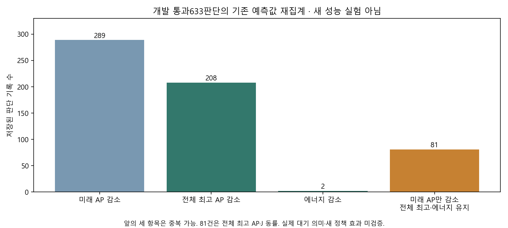

세 AI가 두 라운드에서 합의한 설계와 순수 선택기 검증. 정책 미연결·새 환경/예측/학습/기기0회. 실제 개선은 아직 미확정.
| 관점 | 반론과 반영 |
|---|---|
| 모바일 | 대기는 미래 작업 배정을 확정하지 않음. 실제 대기·취소 의미가 맞는 예측만 허용. |
| 산업공학 | 전체 계획 1등 하나 대신 같은8후보의 실행 첫 행동별로 선택. 전체 최고 AP와 에너지로 평가. |
| RL | 유효한 대안 선택 기회부터 확인. 순수 검사 통과를 정책 성과·RL 필요성으로 표시하지 않음. |
회의·계산식·미완료 · 개발655판단 CSV · 근거와 검증

개발 통과633 중 미래 AP 감소289, 전체 최고 AP 감소208, 에너지 감소2, 미래만 감소81. 원 대기 예측의 실행 의미는 별도 검증 대상이며 81회 실행을 제거했다는 결과가 아니다.
다음은 최대8개 개발 상태의 공개 입력 복원·대안 첫 행동 예측 진단이다. 별도 등록 전에는 실행하지 않으며 기존 확인자료를 새 독립 확인으로 쓰지 않는다.